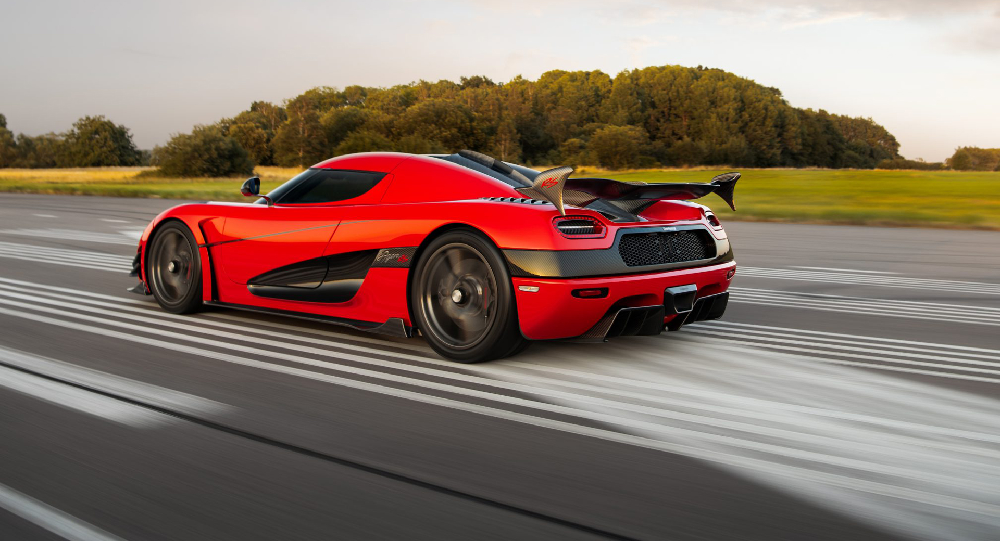
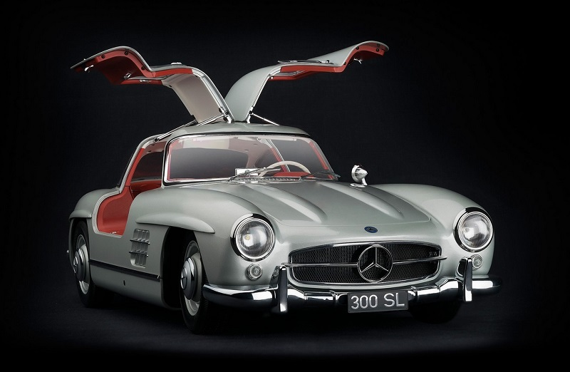

What Makes Sports Cars Special?
Sports cars represent the pinnacle of automotive engineering, blending cutting-edge technology, sleek design, and adrenaline-inducing performance. They are crafted for enthusiasts who crave both speed and sophistication. With their powerful engines, aerodynamic builds, and precision handling, sports cars are the epitome of driving excellence.
The Evolution of Sports Cars
From the early 20th century, sports cars have been synonymous with innovation and luxury. Icons like the Ferrari 250 GTO and the Porsche 911 set benchmarks for design and performance. Over the decades, advancements in aerodynamics, lightweight materials, and turbocharged engines have taken these vehicles to new heights, making them faster, safer, and more efficient.
The Future of Sports Cars
The sports car industry is evolving rapidly, embracing hybrid and electric technologies. Manufacturers like Tesla, Rimac, and Lamborghini are pioneering vehicles that deliver unparalleled performance while prioritizing sustainability. Imagine a car that combines zero emissions with a 0-60 mph time of under 2 seconds — that’s the future we are heading towards.
.jpeg)